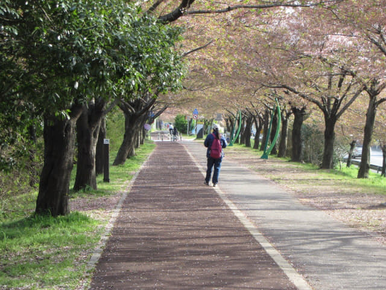
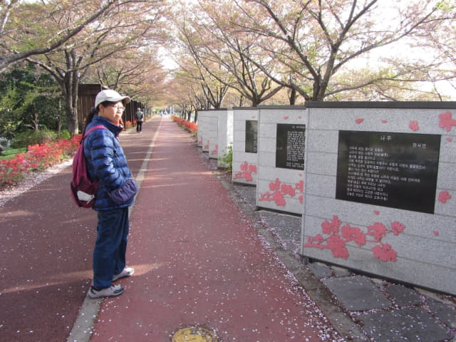

在沙上區輕軌掛法 Renecite 站 對面的 Home plus 6F 美食街吃完經濟午餐, 接著是步行往離這裡不遠的三樂江邊公園遊覽。三樂江邊公園是釜山著名的賞櫻勝地, 出發前就是為了這原因而安排這行程的, 但今年韓國天氣反常, 可以說是南北大倒轉, 釜山的櫻花比正常早了很多開花, 所以三樂江邊公園的櫻花應該大部份已凋謝, 但也按原定計劃前往, 散散步也是好的。
按地區所示, 三樂江邊公園就在輕軌掛法 Renecite 站旁, 走幾分鐘便可到達。

離開 Home plus 百貨大樓, 對面便是輕軌掛法 Renecite 站。
乘手扶電梯往人行天橋, 然後朝公園的方向走。
人行天橋上也有戀人聖地。
從天橋上回望剛才在那裡午餐的 Home plus 百貨大樓。
三樂江邊公園 (삼락강변공원 Samnak Riverside Park) 櫻花隧道
走下天橋, 出口已經是三樂江邊公園, 迎面是一條筆直的人行和腳踏車道, 從左至右, 兩旁都是蔥籠的櫻樹, 交搭構成一條天然樹林隧道, 這裡便是釜山著名的賞櫻勝地 — 三樂江邊公園櫻花道。和估計一樣, 大部份櫻花已凋謝, 而且長滿綠葉。不過, 我們這旅程已經看了很多櫻花盛開壯觀場面, 所以有沒有櫻花看絕對不重要了, 在這裡漫步也是享受。
我們先沿櫻花隧道往左邊走, 也是朝洛東大橋的方向走。
已經過了賞櫻期, 除了我們和當地的市民, 沒有其他外地來的旅客。
不知道是什麼花?
繼續慢慢向前走, 頗寫意的。
道路旁的花朵。

就算沒有櫻花, 那麼漂亮的道路, 也值得一遊。
繼續向前走。前面好像再沒有樹蔭隧道, 就在這裡掉頭吧!

接著掉頭走朝北面走, 也是往洛東江橋的方向。
沿櫻花道朝北面走, 很快便經過人行天橋的出口, 繼續向前走一會, 迎面是一條馬路, 把櫻花道斷開。
現在無論在韓國或香港, 行山或行街, 很多人都喜歡握著雙手放在來行, 每當我走在她前面時, 我也間中模仿來玩。其實很不舒服的, 又容易失去平衡, 不知道為什麼那麼多人喜歡這樣走路。再者, 當人多的時候, 雙手剛好擺在後面的人的敏感部位!
走過馬路, 繼續沿櫻花道走。
繼續往前慢慢走。
走過一個好像圖書館的亭, 突然間…….。
走過一個好像圖書館的亭, 突然間….. 「咳吐」一聲, 一枝「飛劍」從路邊高速飛出, 剛好擊中我的褲子, 望望右邊, 兩個樣貌粗糙的中年男子, 正坐在亭子內抽煙, 剛才肯定是其中一個在吐啖啦!
唉! 好嘔心! 什麼遊興也沒有啦! 唔想繼續走啦!
接著在前面隨便逛一會便離開。
